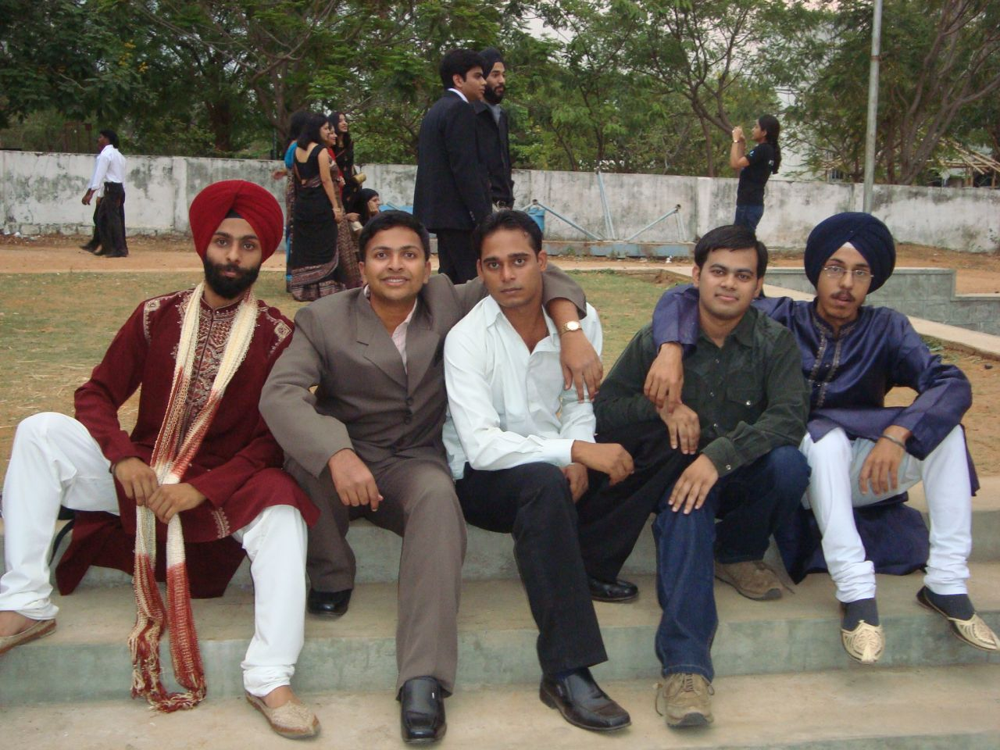

The Yearbook - Commemorating 2005-09!
Ankush Kalkote's profile information
Name - Ankush KalkoteBirthday - 01/01/1987
Email - ankush@students.iiit.ac.in
Address - 78, Parwana Nagar, Purna Road, Nanded
Phone - 9959731035
WishList - driving BMW
What would you want to be remembered as - Maratha warrior, but dont mind with all nicks my friends have kept :P
Testimonials written by Ankush Kalkote
Ankush Kalkote's Album

{kind=link}
Farewell 09

Default caption

Fun at McD... I'm lovin it :)
Testimonials
Kabeer Singh wrote-Ankush ...we met on the first day outside BLN's office ......me , banga , sachin and kalkote .....
we decided kathe room le lete hain ......and we got in cellar .......
'Genious' ...... pehle din , pehli class ke baad pata chal gaya tha kee mera 4 saal bahut
faida hone walla hai .....meri seat ek genious ke saath hai.
1sem mein we used to share the lab sys...... yeh sirf 15 mein ke leye aata tha , apne notebook par likhe
hue code run karta tha and ussi time run ho jaate the ..... kya efficiency thee yaar.....
and wahan se shuru hua tha , uske baad saare khatanaak courses yeh aur banga milkar padhate the .......
ek baar CO ke exam se ek din pehle shaam ko jab isne padhna tha ....yeh gayab ho gaya .......
phone bhi nahi utha raha tha .......raat ko late wapis aaya .......sab pooch rahe the bhai ke hua ...
kahan tha .....saara course pada hai ......isske paas koi jawaab hee nahi tha .....(special tutorials)
bas smile karta raha ...and baad mein pata chala yeh kahan fassa hua tha .......
ekdum hardworking , dedicated , always smilling ,dasssi , ekke banda hai ......
first yr se main isse bolta tha .....tu tension na le .....itna mat padh ....tera google woogle mein
ho hee jayega
 .....
.....
Bahut helping nature .......had loadza fun together .....
All the very best for your future
Google mein chance kam hai ..... bahar aakar dhoond leeyo
Sambhav Jain wrote-
"madmast haati chaal hai inki, hansi kabhi nahi khote !!
ye marathi maanush beech humaare kehlaate 'mote Kalkote' !!!"
Rishi Gupta wrote-
Ankush Kalkote aka Maratha Warrior.....the ten pointer. Extremely hard working, intelligent, dedicated, down to earth, soft-spoken person. I didn't spend much time close to him, but still we had many outings together in the last 2 years.
He taught me TOC. I was really amazed by the way he built his concepts about anything and then helps other in understanding them
 This was proved when he got an intern in Google and then a PPO. Apart from academics, he has no less knowledge than anyone else in IT, Business and various others sectors. I really admire him for that
This was proved when he got an intern in Google and then a PPO. Apart from academics, he has no less knowledge than anyone else in IT, Business and various others sectors. I really admire him for that 
Always keeps on smiling, makes everyone around him comfortable...he is a Gentleman. Always be the same dear...all the best..and stay in touch.
Take Care
Siva Reddy wrote-
sweetest guy who always welcome you with a smiling face. In the first year we are in the same wing (cellar. NBH C-18). He is next to my room. He is sooo coool. never saw angry on his face.
 . Then I was surprised to see his marks. He is very good at acads.
. Then I was surprised to see his marks. He is very good at acads.
You deserve the best. Google is lucky to have you. All the best. Heard that you got a GF
 . enjoy
. enjoy
miss you

Sanket Sharma wrote-
Kalkote the favourite of many here in college. Atleast he is one of my favourite. I know him since the first mid-sems. Somebody was telling 'kya padna kalkote hai na ek raat mai sab karadega. Daddu you also come to cellar, he teaches wonderfully'. Bhaiyon seriously iske padane ka tarika and he depth in the subject undoubtedly the best in the batch. I have always admired him for his knowledge. Finally he has proved and google took away our jewel.
Recently we had an excursion to Bastar with him, despite his hand fracture he never let us feel anything and he joined in every sport we did. I sometime feel sorry for his accident meri hi bike se gira tha bechara
.
I have hardly seen him tensed or angry, always smiling. Keep it up dude.. I have plenty of things to rite. but time never let me do this.

Ajay Somani wrote-
Ankush Kalkote A.K.A. Maratha Warrior, my fellow Google intern
is one of the best brains of our batch. We all know that he's a 9 pointer but he is not one of those who just mug up all the courses all the time and worry too much about the exams. He could clear CAT examination and get call from IIM-B just after solving a few mock papers on the day before the exam.
I have admired him all the time due to his calm nature and friendly behavior. In my first year I've known him for AOE and we used to play together often. After I move to cellar in NBH, we became good friends and used to hang out together and have BC sessions quite often. We became close friends when we started doing our intern together. We used to play lots of foos ball/TT during the intern and have fun. Another thing that I like about him is that he also never gets angry ( at least I havent seen him ). Waise though he looks very innocent and decent but he is also very good at pulling other peoples legs
.
You have a long way to go in your life buddy. Now that you'll be joining Google, I hope we will keep seeing other quite often. Good luck and I hope you achieve great success in life.
Ojasvi Rajpal wrote-
Has a very nice philosophical side too. one of the few people with whom I can share books on Vivekananda and stuff, still reads Gita sometime and has some very
nice books. but all in martahi. Is very calm and composed, knows what he wants from life and tries to achive that. Beech mein kuch time ke liye chahca ka
student ban gaya tha ye sab chod ke, Thank God wapis aa gaya time pe
One of teh best things about him is his uber cool attitude. u can always find a smile gracing his lips. has a grace that calms the whole enviroment
around him. One of teh few persons jo mere phatto pe bhi hasta hein and promotes them too
( quadra core  ). Had alot of fun in playing comp games with him . He being a lazy guy won't move his hands fast enough and hence will lose the game but will never lose the smile
). Had alot of fun in playing comp games with him . He being a lazy guy won't move his hands fast enough and hence will lose the game but will never lose the smile  .Had lot of fun in recent time watcing TBBT with u. Is a real sport, has been the host of few of the best parties we had. Overall banda ek dum mast hein. Chilled to the core . Now he is among the only few in the group with no female friend. Hope he gets a marathi pretty soon
.Had lot of fun in recent time watcing TBBT with u. Is a real sport, has been the host of few of the best parties we had. Overall banda ek dum mast hein. Chilled to the core . Now he is among the only few in the group with no female friend. Hope he gets a marathi pretty soon
WIll Miss you for: Watching TBBT with u, kamehameha , my Pj's and u laughing on them and obviously for the knoweldge bacnk u are
Most memorable moment:first year age, ceaser and similar games , Tbbt
Msg for u: perfection stay the same
Song for u: mein huin bond
Ojasvi Rajpal wrote-
Ankush Ashok kalkote:
Maratha that's the name I normally call him with. I first met him most prob in pankaj's room. He and pankaj used to study together. I think he used to
grimace and get uncofortable around me in the start. I remember hiw he was reading a book on robotics in the very first week in library and how I pulled his
leg on that for a long time. He was very very angery at me for that (In my defense I never knew this will amke him angery
). But besde thesse early
hiccups oer friendship grew strong over years and now we are great pals.
First look at ankush and he looks like a sweet , inncocent child and he indeed is
 , yeah yeah yeah u might not belive it but I can prove it. Who else will
, yeah yeah yeah u might not belive it but I can prove it. Who else will
come to my room when I am "goku" and say "ojas ek bar wo ka me ha me ha" phir se kar ke dikha na
, who else will sit beside somebody playing a computer
game for hours and watch the game. We even scrwed a mid term exam in sem 2 together me playing ceaser 3 and he watching me thanks for all that. Had great fun So yes he is a child and when he is I am his best friend
. He has a very calm soothing voice I am sure he will sing wonderful matahi lullabyes to his children. ( he
sung one to me once too on request
). one of the best things about this guy his the way he gives u moral support for doing all the stupid stuff u wanna do
. He even joins u in it.Perfect pal . One of the worst:- 18 ghante lagatar so sakta hein .
Hmm iske tutes to legendary hein. One of the most gifted brains in IIIT. and kattha bhi mast hein pata bhi nahi chlata. Google is lucky to have him. ( wisj u
were in my team in MS
). Bande ne bina padhe IIM crack kiya. Baki sare batch ne 4 saal mehnat ki bande ne 4 din and he still scored better . Has a innate understanding for subjects other run from ( CO , DLD , EC etc etc!!). I remember the diagram in Co which u made for CO and the whole copied it but noboy could understand a thing and despite all this nobody ever heard a proud word for him^^^
Is prud of his culture and language. Regularly reads Martahi and tecahes it ( taught me a bit, but ganja is his fav student) Has a very nice philosophical side too. one of the few people with whom I can share books on Vivekananda and stuff, still reads Gita sometime and has some very
nice books. but a
Sunil Soni wrote-
kalkote - bond with the best ...
this guy is really very simple .. u never come to know about his achievements ... intern aur job ke liye there was a fight between microsoft n google .. par somehow kalkote was more generous to google n gave them d opportunity
i remember d day jab logo ko intern bhi nahi lag rahi thi aur iske paas google aur microsoft ka offer tha ... huh ... bahut bada chupa rustam bond hain ...
this guy is really very cheerful ... hardam haste rehta hain .. gotta very wonderful smile on his ALWAYS ... always ... always ...
kabhi isko gusse hote hue nahi dekha ... koi tips de de yaar gussa na hone ke liye aur aise waise logo ko jhelne ke liye ...
keep rocking dude ... aise heen haste haste rehna
Maruti Borker wrote-
Kalkote ... one more maharastrian ( other being ranga
) .. is one helluva of a bond ... hasmukh guy always smiling ..
During my google intern, he was the only sane intern I could talk to.. somani saala din bar coding coding
 .. we used to pull his leg and that was our timepass . He was the one who consoled me after my first interview, also encouraged me not to give up and try my level best in the next one . We were an awesome pair in foosball, we used to kick others ass ...
.. we used to pull his leg and that was our timepass . He was the one who consoled me after my first interview, also encouraged me not to give up and try my level best in the next one . We were an awesome pair in foosball, we used to kick others ass ...
I will also remember him for his tutorials during Economics course
, got a B- because of him else would have got a F/D
Google mein aish kariyo dude
... will miss you and your smile .. Deepak Vig wrote-
Kalkote aka Maratha Warrior, one of the gr8 bonds of our batch
(studies mein aur frastape mein ). The only guy who got a call from IIMB by solving a few AIMCAT papers and also got placed in Google. I think ... now I shouldn't explain anything further in the department of studies as it is quite clear . Now come to the other department .... Girls ... bhut frastoo hai. Hope you remember the scrolling down a Pic incident . If any person of our gang finds him with any girl or just wandering near or around a girl ... iski buri trhaan se fatt leti hai and after that its really very funny to hear the excuses he makes . Few days back he lost the control of his bike because of these kind of things and broke his arm (kya karen "Dil hai ke Manta nahi" )
He has unique style of walking ... we call that an elephant walk
(door se he pta chal jata hai ki Kalkote aa raha hai ). You can always find him in his room listening to Old Hindi songs .. kabhi room se bahar he nahi nikalta.
The best thing about him is that I always find him with a big smiling face
... and also laughs a lot, always finds a thing to laugh about. He always remain cool minded about most of the things but manages to complete them in time . He is good at CZ and AOE .. use to play by the name "maratha warrior".
We went to bastar together and it was gr8 to have him as company .. it was gr8 fun ...good to see his enthusiasm and adjustable nature
. We are going to stay in the same flat .. so I think I won't miss him . It will be fun having his company. Can't forget the food in the Yuktahar mess ... had a lot of fun thr .
Wish you best of Luck for your future ... we will always be in contact so don't worry
. Veer Deora wrote-
Oye Kalkote aka Maratha Warrior ,
tu to meri testi likhega nahi..socha main hi likh deta hoon..
Yaar my testimonial might be short and simple but i'll write what i really think about u.
Starting main to muze lagta tha ki tu mand buddhhi hai...but as time passes and grades were out, i realized it was me who was mand buddhi and on the contrary kalkote is one of the most sharp minded guy of our batch. He thinks about the right way to do things rather then executing them straigtaway. We had very formal relation for around 6-7 semester but in around last semester same floor par rahne se thoda jyada contact main aaye and started enjoying each and every meeting.
We alwasy have very unique and different type of chat, no matter what the topic is, we always talk about that logically and try to figure out things we can laugh at
, and really i m loving it.
Sometime i think he is very good friend of mine but somtimes sala thodi distance bana leta hai. Par jo bhi ho...banda bada hi awesome hai... CAT fod ke isne prove kar diya hai ki he is the Best !!
Got placed in Google and i hope ki daily muze (along with mux) lunch ke liye invite karega.
Likhne ko to bahut kuch hai but jitna bhi likhoonga...ultimately overall sense wahi rahega. I wish we have lot more to talk about and share in the time to come
Do remember me as a funny guy and good friend of yours
Don't forget to invite me on ur marriage party.
Manish Arora wrote-
Ankush Kalkote aka Maratha Warrior (CS)
Kal Kal kote Kal Kal Kote .... ae o ae o ...
If someone asks me to use just 2 words for this guy, then those would be intelligent and down-to-earth. Yes, this guy is very sharp, very intelligent and yet, down-to-earth. Bahut hi down-to-earth banda hai. Kabhi attitude nahi dikhayga. Ultimate cool bhi hai. Never seen him taking tension for anything at all: be it exam or interview or MS Open Source presentation
for that matter. I find a lot of similarities between me-Adi and Banga-Ankush groups. In both of the groups, dono hamesha saath saath rehte hain, saath-2 enjoy karte hain, saath-2 projects karte hain aur saath-2 hi courses lete hain. Dono ka hi BTP MS Open Source se funded hai. Talking about Ankush, his CGPA, placement, getting a call from IIM-B (without even preparing for CAT, maine tujhe dark-horse predict kiya tha, yaad hai na ) are a testimony to his intelligence and sharpness. Aur is bande ne jo CO padhaya tha, vo main kabhi bhi nahi bhool sakta. Simply awesome. Thanks a lot for that buddy . And yeah, thanks for helping us out in Middleware project as well . Hamesha haste hue milta hai ye banda. Google is lucky to have you. Keep rocking. Never change yourself. You are an amazing guy. I'll never forget all the bc we did especially before MS Open Source presentations and while working for trimaran in Compilers lab. All the best for all ur future endeavours. Bhai ko bhoolna nahi. Tu to hyd mein hi hai, to fir touch mein rahiyo pakke se. God bless !!Kulbir Saini wrote-
I didn't know much about this guy in first year. All I knew was that he used to teach some stuff during mid/end sems and I used to cram whatever he said. The only interaction we had was during AOE games, outings or classes may be.
But we came really close in second year when I moved to NBH. He is damn good at studies and is damn interested in computer hardware just like me. I can't forget the times when we both used to spend hours browsing the websites like newegg looking for best hardware and finding out best value for money hardware with no money in hand
He is an intel fanboy and I am an AMD fanboy. Now you know what should have happened. We used to occasionally fight about which one is best. I don't know why but we have an extremely good compatibility index. He also follow all the tech news on the slashdot and similar channels. In our group, he is the only guy with whom I can talk all the tech stuff everyone.
I am not going to write about any social stuff here because all that is obvious part as he is a very good person at heart and always ready to help and what not blah blah ....
Keeping in mind the above stuff, I can surely say that this guy has a huge share in making me a tech savvy. Thanks for your support buddy!!!
As we both are in Hyderabad, I hope this tech talks will continue over the weekends
Varun wrote-
very gud person.... i always see a smile on ur face since first year.. very rarely see it with ppl for a long time ...
... njoi the life ... Abhinav Parashar wrote-
Kalkots without chots
he he he he he he he he he he khi khi khi khi khi ... he he ...
Bande ko kuch bhi bol lo iska pehla response yahi rehta hai
. one of the most fodu bandas of our batch. Dhai ghante padh ke bande ne CAT fod diya. Na jane kitne subjects isne sab logo ko padhaye hain.
He has a very good knowladge of computer world.
Bhai ki chalne ki style par to sab fida hain ... madmast hathi ki tarah chalta hai lehrata balkhata
. Dikhne me bahut seedha lagta hai ....but jab bat BC ki aati hai ....to bahut bada BCBaaz hai. Ek no. ka aalsi hai....
mahine me ek-do bar bahut force karo tab bahar nikalta hai.
Ise dekh kar hera pheri ke Babu rao aapte ( Paresh rawal ) ki yad aa jati hai
. Computer Games ka bhi shauk hai bhai ko ....
bahut he down to earth banda hai ( and i mean it this time
). Dude u really deserve google.
Overall he is a nice guy, a good friend, sensible , fodu and fun loving guy. It was really great being with you. Nice to know we both r in hyd. So touch me rahio. Karlos, jai maharashtra
Manish Sharma wrote-
Ankush is one of the most brilliant student of our batch.
I was unaware of this brilliant guy in the first year of my college life. He has been consistent in studies throughout his college life. Not only he studies well  but also teaches us (i.e. his batch mates) just before examination so that we can perform better. He also taught me a few subjects such as Compilers, TOC, Cryptography etc. I am really thankful to him for all the help he provided to me. He has been an inspirational source for me throughout the college life. One thing for which I appreciate him the most is not his intelligence but how perfectly he takes it's use. According to me, everyone in the world has been gifted an excellent brain, but there are a few who perfectly use it to let others feel the vibe of their intelligence and no doubt, Ankush is among those.
but also teaches us (i.e. his batch mates) just before examination so that we can perform better. He also taught me a few subjects such as Compilers, TOC, Cryptography etc. I am really thankful to him for all the help he provided to me. He has been an inspirational source for me throughout the college life. One thing for which I appreciate him the most is not his intelligence but how perfectly he takes it's use. According to me, everyone in the world has been gifted an excellent brain, but there are a few who perfectly use it to let others feel the vibe of their intelligence and no doubt, Ankush is among those.
Job in Google and passing CAT (written) are the proofs of his brilliance.
In spite of all these qualities, he has some shortcomings as well.
He can't tolerate his criticism especially from Ojasvi.  If a man is a master in a single field, then it does not mean he can be the master in other fields by default. According to me, he just wishes to hear praises from others for whatever he maneuvers and if someone criticizes him, then he starts thinking how can this person make a fun of me when he is at a lower level than me in studies.
If a man is a master in a single field, then it does not mean he can be the master in other fields by default. According to me, he just wishes to hear praises from others for whatever he maneuvers and if someone criticizes him, then he starts thinking how can this person make a fun of me when he is at a lower level than me in studies.
I have shortcomings too. And one which he pointed out is that I get excited very quickly. He is totally correct about that. And I am trying to overcome that shortcoming. I am really thankful to him for pointing that out.
He has really been a nice friend to me. And he even tried to teach me MARATHI (his mother tongue). He never refused to me for any kind of help. He is really a great friend.
Wish you a very good luck. Hope you will achieve whatever you desire.
CHEERS!!
Himank Sharma wrote-
Ankush
Almost everybody knows about his academic accomplishment and the gentle nature of this person. The first thing which comes to my mind when I think about him is the gentle smile which is always gracing his lips. This marathi manoos, must be one of the most gentle and soft spoken guy I have ever met in my life.
Another one of my cellar mate, will always remember his and Sachin's room just beside ours. All the times there used to be the sound of some or the other game being played in the room and ofcourse all the immensely helpful tutes which were a lifeline for many of us. I have seldom seen a person who had such a hold over the concepts and the subject never mattered. Even in our 4th year we went to him to study Middleware, a course which he took last year, and yet, he was as always ever complying and ever so clear on the concepts... Just too good man!!
All the best for your future man..
Cheers!! Keep rocking...
Stay in touch
Karan wrote-
Two things I'll always remember about Ankush. The way he laughs for every little joke
. And the way he smiles and speaks to people. Can anyone get more soft spoken than him?
I've not had much interaction with him, but whatever little I spoke to him in the cellar, he was fun. And brilliant. I remember asking him to solve an iffy problem in EC once.. He did it in a jiffy! I remember that in cellar, everyone, including Banga and Sambhav would go to him for doubts. And there was nothing which he could not clear. The way he cracked Google and CAT - a testimony to his brilliance.
I am sure you'll do well in life, you'r far too good!
May God bless!
Person he resembles: Sidhu?
Fav memory: BC in cellar
Message for him: You can be more outgoing
Peace.
Srirang Ranjalkar wrote-
Kalkote bhau!
Me jaanoon bujhoon he testimonial marathi madhe lihit aahe karan ki tujhya muLe majha ithe (IIIT madhe) marathi bolna, rahna aaj sudha chalu aahe. Ani matrbhasha tar maatrabhashach aste na. Ithe sagle aplya aplya bhashet testimonial lihit aahet. Ani majhya saathi fakt ek tuch asa aahes jela ki mi marathi madhe testimonial lihu shakto
.
Khoop anand jhala jya divshi kaLala ki tula Google madhe job lagla
. Tujhi sari mehnat cha faL miLala. Tya peksha jaast anand tar CAT results chya divashi jhaala. I mean apan doghe hi ekach taxeeth gelo hoto ani tujha kahi serious preparation nastanna suddha tujha succesful result aala. Serisouly, hats off to yout talent .
Itka kahi asoon sudha tu itka simple sa rahtos ani itka simple sa distos ya eka point var mala tujha khoop abhimaan vaTtoy.
. Ani mala manapasoon vatTay ki eke na eka divshi tu aplya aai baabancha naav khoop roshan karsheel.
Tujhya sobat me pahilela ekaik natak (infact majhya life madhe me pahilela pahila natak) "eka lagna chi gosht" khoop chaan hota ani majha pahila natak aslya muLe ajunahi jyast khushi jhali. Ani teech aplya madhli the most unforgettable moment in our life aahe asa mala vaTtay.
All the best for all your future endeavors and keep rocking. Tujhya madhe sagle swapna sakar karnyachi kshamata mala disat aahe. Ani tyachya saathi jar majhi kahi hi garaz asael, tar majhe darwaaje sadaa tujhya saathi ughade aahet.
(majhi marathi kahi phaar shudh nahi aahe. But je kahi sangaycha hota te kalvinya madhe succesful jhalo asa vaTtay
kahi ulta-seedha aseal tar kaLav )
Srirang.
Alok Kumar Gautam wrote-
most of the time ..ans is NO .. but loves taking a stroll after dinner... bhai sahab swasthya par bahut dhyaan dete hein...always thinks whether he should eat potato or not and this or that and blah blah ... tabhi to yeh haal hai
... itna dhyaan na diya kar tau ....bindaas khaya kar... aur thodi bahut mehnat kar liya kar.... always thinks of going for jogign or doing some physical exercise...but sochna hi to kabhi nahin hota na mere bhai... ...iski koi bhi movie dekhne ka tareeka bhi unique hai...koi bhi movie at a stretch nahin dekhta...aaram se 2 3 dino mein movie poori hoti hai iski... ....hmm..bahut khinchai ho gayee ... ab nahin... is a fodu programmer and algorithms to awesome sochta tha...i was (almost everyone in our group) a lot dependent on him for all the assignments..and he never disappointed us..lekin jab se iski Google ki intership khatm hui... isne padhai likhai se sanyaas le liya... pahle to 2 3 mahine tak jab tak iska result nahin aaya..thoda thoda pareshaan rahta tha..uske baad to banda mast ho gaya...always cool ...banga sahab se kabhi kabhi nok jhonk hoti rahti hia ... ... and we always remain there ..maje lene ke liye .. ...PPO ke baad bande ne TV serials wagera bhi dekhna chalu kar diya...aur ab to koi bhi episode miss nahin karta...ab thode bahut novels wagera bhi padhne laga hai.BC sessions mein yeh jyada kucch bolta nahin hai... bas maje lete rahta hai... .. .. waise aajkal yeh bhi thoda bahut frustoo hone laga hai .......is a typical marathi maanus...whenever i watch Hera Pheri.. Paresh Rawal always reminds of you.. ..and hope you get your typo marathi girl soon... ..Keep in touch...
Most Memorabe Moments All our outings and some BC sessions which you were involved in..and trip to Bastar.
Will Miss You For All your support and encouragement
Alok Kumar Gautam wrote-
Ankush Kalkote has got a lot of names.. maratha-warrior, Kalkote, Kalkota,Kalkoti, Yenki,Yankush, mota
aur bhi do chaar... This boy is really a gem. Its really difficult to find such an intelligent, nice and down-to-earth friend. Always ready to help others academically... Always thinks binary 1 or 0 .. Is damn good at electornics..da subject I fear the most.. You will always find a cute smile on the face of this innocent looking boy. Is a game freak..and plays
all da games really..loves reading techy magazines and surfing for technical knowledge ...... well...from the first year...apan hamesha ek hi floor pe rahe..to dosti honi to laazmi tha.. . but his lovely attitude and helpfulness brought me more and more closer to him..da best thing about him is dat...i never need to tell him my whole problem ... i am at half the way of explaining my problem to him and he just
comes wid an awesome solution..thanx a lot mate for helping me several times.... and understanding me so well
. will always miss you for that.. is really a techy guy...
aur jitna isne padhaya hoga logon ko..utna shayad hi kisi ne padhaya ho...all those aweful which were so difficult... CO , OS and compilers... apan sabhi isi se padhte the.. but mujhe hamesha ek shikayat rahegi be...tune jo bhi subject mujhe padhaya...mere hamesh gande grades aaye...
..koi na..no fault wid you.. ...you always tried your best... iski aur ek baat hai...yeh bahut hansta hai...pahle jab bhi yeh mere saath hota tha aur mein kucch funny bolta tha...yeh bahut hansta tha... and i always thought "ki mera sense of humour kaphi accha hai.." ..baad mein pata chala..ki yeh to har baat pe hi hansta hai .....ise to apne group ka Navjot Siddhu hona chahiye.... ... loves sleeping...and sleeps a lot... waise iska partner (KK) bhi kam nahin tha...dono mein hamesha fight hoti thi...ki kaun jyada sota hai.... waise yeh alsi bhi ek number ka hai...kabhi bhi ise outdoor game khelne ya campus ka round marne ke liye bolo...
Cont.
Randeep Singh Banga wrote-
Will Miss U for :- aise kaise miss, abhi to hamaare saath hi hai tu
Most Memorable moment : - d happiness on your face when you heard d news of getting into google after such a long wait
Msg for U: - last sem mein zyada bigad gaya hai, seedha ho ja.
Song for U :- hass hass layiyaan asan tere naal yaariyan, yaariyan ne saanu jind jaan ton wi pyariyaan
Randeep Singh Banga wrote-
I have known him right from the 1st sem and for me, he always improved on his image as a brilliant mind. He would be one of d 1st I would make a partner if I think of starting a new business. He is 1 of d few who I enjoy to be taught by. It was wonders for me when he taught DLD, CO, OS. I used to think Oh GOD howcome does he know so much. Finally I am very happy that he is placed in Google, but I regret MS incurred a huge loss by missing on him.
He is gifted by God for many things and there can't be another Ankush. Yaar tujhe ghar waalon se ek baar zaroor milwana hai. Hope u visit Amritsar soon. In d end, I am sure u will rise very high par ek baat kehna chahta hoon 'Yaar please hamein maat bhoolna'.
Randeep Singh Banga wrote-
Ankush Kalkote
A very simple and light hearted person, always remains happy. Is extremely talented and very much down to earth. A gem of a person (zyada ho gaya lagta hai).
It was day one of college when Ankush, Sachin, Kabeer and me met for d 1st time outside BLN's office. Luckily we got rooms together and that too in NBH cellar
(awesome BC place). I remember him being part of our discussions on ragging stories of our batch. He looked innocent but . We all used sit together in Pankaj's room and our BC used to last till late nights. We all together used to go to Akansh sir's room to watch movies. The 1st impression of him not being ordinary guy came to me when he explained to me some concepts of DLD. And I would admit tht his excellence was a driving factor in initial stages of our friendship. I had a repent I couldn't do my ITWS 3 project with him but that's now won over by our 2 year long association in all our major graduation projects . Ab to apni team itni strong hai ki, koi bhi project ho, 2 din mein to hum kar hi denge (ab kaise woh to hmein hi pata hai ) But haan shayad logo ko sach nahi pata ki kaam hamesha Ankush ne hi kiya hai We together have been through many good as well as bad times, but it always relieved me when he said, 'tension mat le yaar' .He has always been very supportive and is my lifeline in wanting times. Please don't change
I believe its tough to be my friend as people have to bear with me for many of my strange habbits and he has done that without ever showing it. Hey, I am sorry for not being in the campus for recent times but our friendship still remains d same. aur haan ghar paas mein hi lena.
He loves Marathi, often hears Marathi music and reads Marathi news and books. Loves his culture, his family.
I won't b wrong if i rate him as one of d best brains in d country
. His interview call from IIM Bang was not luck but talent (he prepared as much for it as we do for 8th sems exms). Neways this wasn't a surprise for me. Atul Dwivedi wrote-
Ankush bhai .. ye banda bahut hi hasmukh kisam ka banda hai ... He's one of bondest guy in our batch. He prepared for CAT for just 3 hr and he got call from IIM-B. mai kaise bhool sakta hun .. jo tune DI ke question kiye the mere sath..mujhe samajhne mein hi time lag raha tha .. aur tu to fatafat kar raha tha .. He's a very intelligent person and hard working too. Bhai sahab ..dimaag kya chalta hai ..
Very friendly in nature, who loves to talk. Very funny guy, we share lots of cheap jokes.
.
Bhai all cheap joke ka database banana padega..mai ek sentence bolta hun ..Ye hasna start...fir to mai cheap se cheap joke marta hun ...!! ek time to aisa huaa ke ye haseen control hi nahi kar paya ..
Waise isne apna hath kaise toda ..us par joke hai ek .. (ref forum)
Very helping person, thanks bro for helping us during placement time..
Baaki kaa baad mein likhunga ... bahut aalasi ho gaya hun
Pankaj Saini wrote-
we share so many jokes.. that we don't even need to speak them out.. I mean if we are smwhr and we find ojasvi approaching.. I wud just look at ankush and he wud start giggling
.. Chacha.. wud say sth and I wud look at ankush and again we both wud laugh...
i remember him for his strong conservative takes on how his family (i mean his wife and children wud be like
) ..i hope you remember those things you once said.. including the words.. " kaat daaloonga ***** ko "
all n all he's smone who wud just lay low.. I mean i've seen people with lesser calibre going gung-ho about what they can do.. and there he is.. always happy with the way things are.. no worries.. and no need to boss around
well.. he'd been part of sm pranks we've played.. i hope you remember calling that gal.
and how you came running to me when she replied
he never really wants to get in the mid of heat ... but when it comes to banga.. he makes an exception... he and banga shares a chemistry.. a chemistry of explosives.. I've had so much fun with him at banga's cost.. banga has never seemed to mind... but when he did... we had the most fun...
the most common phrases he uses are "chhod naa yaar" .. "kya karega" .. "abhi nahi yaar" .. "arey woh banga hai.." .. "arey yaar..chacha hai woh.. kyun lad raha hai us se" ... "kai nai"
laughs a lot.. so just keep on laughing like this
Pankaj Saini wrote-
I'd ask him. "abe.. tune mere ko yeh nahi padhaya.." and he's like "kya karega... A chahiye kya tujhe..." ... and I'd say "naaaah..." ... and then he wud finally say " chhod naa... aish kar.. paas ho jayega.." and I'd be happy go lucky
we used to tell him a lot .. " yeh... kaat ta bahut mast hai "
Pankaj Saini wrote-
I won't need to provide any justification if I say that Ankush is one of the few 'true and genuine BONDs' of our batch
. But again anyone will say and write that about him
I've known Ankush since my very first outing in Hyderabad.. we both bought so many books and notebooks.. and we roamed around hyderabad carrying that load ... feels so stupid now
Well only a few people know that how 'techie' I used to be at least in the 1st semester.. and I wud discuss all the latest technologies with ankush... used to pay frequent visits to library..
and then we found a heaven in akansh sir's room... I wud always be there.. most of times accompanied by ankush.. I wud just write a code.. and it wudn't work.. and I wud hand it over to ankush.. and he wud make it workable enough to upload it
...
we used to watch so many 'videos' at akansh sir's compu ... we used to call it our 'chitrahaar'
.. and it's only there we had our first experience of some 'rated' videos
he's always been around in all our outings though it was not always easy to detect his presence... he's always been the quite types when in gang.. but when he gets going.. (which he has been doing off late... pulling alok's and banga's legs) he joins the celebration wholeheartedly..
one peculiar thing to notice about him is his attitude... and his way of presenting himself.. at first you wud find him to be a 'pretty laid back' .. 'lazy' kinda guy... and it's true too to some extent... I mean look at the way he walks.. 'mast haathi wali chaal'
.. sleeps a lot... I mean that's what I find him doing most of the times when I knock at his door..
most of the people know him and appreciate him because of all the tutorials he has taken over the 3-4 years to teach almost everyone who comes to him... but let me give you the inside stories
he is dexter... he knows how much a particular guy needs to know.. so no point in teaching him more or complicated.. (though a nice thing
) .. it's happened with me a lot.. Harsh wrote-
Always with a laughter on his face and a sense of calmness. A very intelligent and hard working person. Wonderfully clear when it comes to concepts. I dont know how many courses he has tutored (informally). My ITWS project partner.
Last few days of the projects were really something when the whole batch was gone home and enjoying both of us were on night outs trying to finish our work.
Unfortunately broke his arm in a recent accident. Get well soon !!
Wish you a very successful life !!
Sachin wrote-
When comes to girls he is bit frustoo like many other IIITian
. Often sends friends requests/SMS to random girls and got rejected . Don't worry you will find your match soon
I remember you used to talk about getting into "Bell Labs" for your MS. Hope you achieve what you dreamed of. Best of Luck for IIM-B's result, Lastly, I wish you all the best for your future . Will Miss u surely
 . Hoping you too to land in Bangalore, the fun will be double with you there .
. Hoping you too to land in Bangalore, the fun will be double with you there .
Will Miss U for :- Your Knowledge ,Way of teaching , Your ever smiling face.
Most Memorable moment : - The day you came from, saw Appy bottle, and misunderstand that to be a Beer bottle and your dream where you are searching a term in the newspaper.
Msg for U: - Ask Google to tranfer you to Bangalore Campus. And don't ever take tips from Alok again: P
Song for U :- Bholi si surat
Sachin wrote-
The Honor of getting my first testimonial goes to My Ex-Roomie "ANKUSH" Or "Maratha Warrior"[as he call himself
].So, It stated with my first day at IIIT-H(how can I miss that H) in front of Appaji's office I met this guy all alone and looked the same (minus the devilish smile which he has now) the simple innocent,nerdy guy with spects and a file. I went to him and talked for a while , since we don't have any known friends ,we decided to take the room together, He is highly intelligent , soft spoken, ever smiling, lazy (less than me) and fun to be with. Sharing a room with him was fun, He never argues with you over silly things, infact I don't remember we ever had a fight/argument; he wakes you up for all of your classes. The special perk of being his roomie is you don't have to bother about toughest of subjects like CO, EC, OS, and Compiler etc.I wouldn't have passed even HSSMs like economics and ITS if you haven't thought me. The way he teaches it makes everything seems easy and logical . I remember in the second sem we used to decide that tomorrow we will miss all the classes and used to sleep upto 12 hrs at a stretch. The AOE, CZ and all those flash games we used to play was really entertaining . Fan of Animated and Hindi movies .He usually divides the film in three parts and watch them separately like they do in DD1. He must have "Ab tak chappan" in more than chappan parts . He use to talk with someone when he is asleep and some day I remember you shouted in your dream[ that too in marathi].
He is one of few 10 pointers from our batch
. Avid follower of Slashdot, Technorati and all those tech sites. He cracked two of the hardest interview i.e. of Google and Microsoft . Google made him wait for three long months , He was seen frustrated every time some1 asks him about the result. It was great day when he got the result and treat was really awesome . Loved the Party